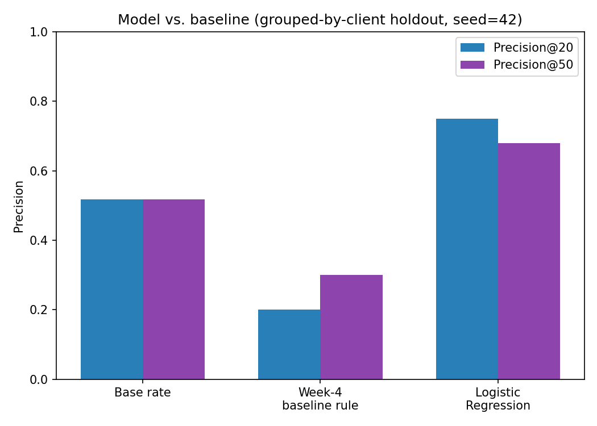
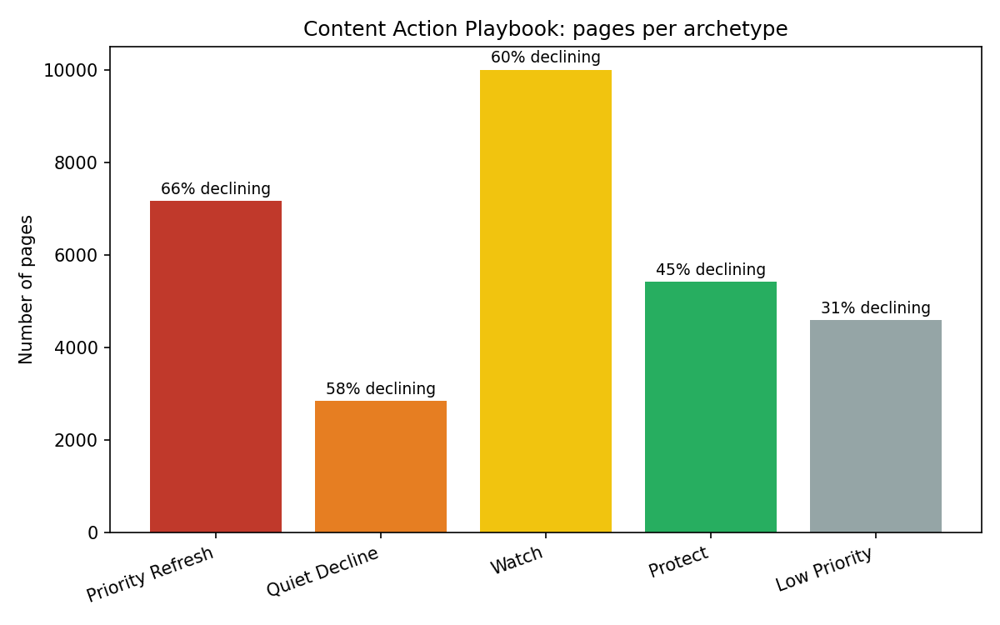

Which pages in a content portfolio deserve human review first — and how much should you trust the answer?
Content teams need to prioritize which pages to review for refresh, but a simple staleness-and-volume rule performs worse than random ordering on this dataset. This work builds a Logistic Regression model on decision-time-available features — content age, update history, position, CTR, and content type — validated with a client-grouped holdout to avoid learning client-specific shortcuts. The model reaches a mean Precision@20 of 0.68 (range 0.50–0.75 across five client holdouts) against a 0.52 base rate, clearly outperforming both the baseline rule and a more complex Random Forest. The result is packaged as a five-archetype action playbook with reason codes, human-review requirements, and an explicit no-automation policy — sized for decision support, not automated action.
Content teams can't manually review every page every cycle. The practical question isn't "is this page declining" in the abstract — it's which pages should a human look at first, this cycle, and why. That's a ranking-and-triage problem, not a classification problem, and it needs an answer a content editor can act on: a short list, a reason, and a clear line between "review this" and "leave it alone."
This paper documents an attempt to build that ranking honestly — including the places it broke, the assumption it disproved along the way, and the limits it doesn't try to hide.
This work uses the FlyRank ML Internship starter dataset: 30,000 anonymized content pages across 32 anonymized client accounts and three content types (comparison article, feedly article, keyword article). Each row aggregates a 90-day trailing window plus two sequential 30-day comparison windows used to compute a trend label. No client names, domains, raw exports, or credentials appear anywhere in this analysis — all identifiers are anonymized hashes supplied by the dataset itself.
Excluded from every model: trend_direction, trend_pct,
and the six *_last_30d / *_prev_30d columns (confirmed label-derived — see
Methodology), plus the four 90-day volume aggregates (impressions_90d, clicks_90d,
pageviews_90d, sessions_90d), which fully contain the exact 30-day window the
label is built from.
The target is trend_direction == "down". Reconstructing this from the raw 30-day
windows — (impressions_last_30d − impressions_prev_30d) / impressions_prev_30d — correlates
with the disclosed trend_pct column at r = 0.9999999984, confirming the label's exact
construction and disqualifying those source columns as features. A second check found the dataset's
actual "declining" cutoff sits near ±20%, not the ±10% the FlyRank research paper discloses for this
same metric — a disclosed mismatch, not an assumed match.
content_age_days, days_since_last_update, avg_position,
ctr, word_count, search_volume, competition (each
with a missingness flag), and one-hot encoded content_type.
A transparent rule: stale (≥90 days since update) × visible (≥300 impressions) ×
impressions_90d, with one reason code and one action label.
Splitting rows at random lets a model see hundreds of near-duplicate rows from the same client in
both train and test — a real mechanism, confirmed directly on this data. All results below instead use
a GroupShuffleSplit by client (75/25), so the test measures generalization to new
clients, not memorization of ones already seen. With only 32 total clients, a single 8-client holdout
is a noisy estimate, so the same architecture was re-run across 5 different holdouts and reported as a
range.
| Method | Precision@20 | Precision@50 |
|---|---|---|
| Base rate (random order) | 0.517 | 0.517 |
| Baseline rule (stale × visible × volume) | 0.200 | 0.300 |
| Random Forest | 0.300 | 0.440 |
| Logistic Regression | 0.750 | 0.680 |
Across 5 client holdouts, Logistic Regression's Precision@20 ranged 0.50–0.75 (mean 0.68) and Precision@50 ranged 0.48–0.80 (mean 0.64) — ahead of the baseline in every run, though the exact margin depends on which clients are held out. The baseline rule scoring below random isn't a new failure: an earlier signal check already found search volume is not a clean, monotonic predictor of decline, and this result confirms it a second way. The more complex Random Forest did not outperform the simpler model — added complexity wasn't rewarded here.

word_count, search_volume,
or competition and are imputed with an explicit missingness flag, not observed directly.The validated model scores every page; two dimensions — predicted decline risk and current search visibility — sort pages into five archetypes, worked in tier order:
| Archetype | Share of pages | Observed decline rate | Action |
|---|---|---|---|
| Priority Refresh | 23.9% | 66.4% | review_for_refresh |
| Quiet Decline | 9.5% | 58.4% | monitor_low_priority |
| Watch | 33.3% | 59.7% | watch_next_cycle |
| Protect | 18.0% | 45.0% | protect_periodic_check |
| Low Priority | 15.3% | 31.4% | monitor_only |

On any Priority Refresh or Quiet Decline page: check real content quality (especially where word count is unmeasured), rule out technical or indexing issues before assuming a content problem, and confirm the underlying keyword's demand isn't itself fading.
No auto-publishing or auto-editing from this output. No treating any single page's score as a guarantee — it is a cohort-level measurement. No use in evaluating individual writers or teams. No acting on a slice smaller than roughly 200 rows without a manual check.
Re-score monthly, matching the label's own 30-day windows. Re-audit — don't just trust the next run — if a fresh holdout's Precision@20 falls near or below 0.50, if missingness rates drift from today's baseline, or if the observed label threshold no longer matches ~±20% on a new data export.
Full source, every weekly notebook, and this capstone's consolidated notebook are public:
work/notebooks/capstone.ipynbwork/notebooks/w04–w07work/outputs/w07_metrics.json